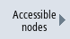
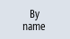
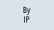
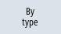
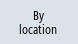
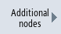
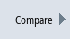

By actuating the "Accessible nodes" softkey in the network, the list of accessible nodes on X120 and, if necessary, on X150, is created and displayed. The list content can be compared as current topology with a reference topology.
|
Note
|
|
Although handheld terminals and EKS identification systems are not determined for the list of accessible nodes, they can be added as additional nodes to the topology.
|
Procedure
 | 1. | The "Network Status" window opens. |
|  | 2. | Press the "Accessible nodes" softkey. The "Accessible Nodes" window opens. The IP address, HW-Id/type, status and location are displayed in tabular form for each node. |
 | 3. | Press the "Sort" softkey. |
|     | 4. | Press the "By name", "By IP", "By type" or "By location" softkeys to sort the display. |
| | | - OR - |
| | 3. | Press the "Topology" softkey if you require an overview of all of the networked nodes, e.g. to check if there are connection problems. The "Network Topology" window opens. The interface, port and the actual connection are displayed for each node using a tree topology. Note: The station name must be defined for all nodes so that the topology is correctly displayed. |
| | 4. | Press the "Expand all" or "Close all" softkey to maximize or minimize the tree topology. |
| | 5. | Press the "Follow connection" softkey to follow nodes in the structure tree using the marked line. |
| | | - OR - |
| | 3. | If further information is provided for a selected node, press the "Details" softkey to open the Web user interface. Note: The installed operating software must be located in the same network as the device to be displayed. If necessary, this is achieved by the assignment of a second IP address (alias). The "Details" window opens. |
| | 4. | Press the "Zoom +" or "Zoom -" softkey until the desired display size is reached. |
Additional nodes
  | 3. | Press the "Additional nodes" softkey to search for nodes that are not listed under "Accessible nodes". The "Search for Additional Nodes" window opens. If necessary, change the address range and confirm with "OK". The found nodes are appended in the table; the HW-Id/type, Location, Contact and Description fields can then be edited and, by activating the checkbox, added to the first column, and, with a subsequent save, added to the reference topology. |
Comparing
|  | 3. | Press the "Compare" softkey to compare the current list of nodes either with the previously saved manufacturer topology, a reference topology or a saved topology in the .xml format. The "Compare with" window opens. Position the cursor on the desired option box and confirm with "OK". |
Deviations during the comparison are identified by being color-highlighted:
Red: missing or non-accessible components compared with the reference topology.
Pink: components that deviate in their attribute values compared with the reference topology.
Blue: new components not contained in the reference topology.
Saving
 | 3. | Press the "Save" softkey to save the current topology. The "Save as" window opens. |
| | 4. | Position the cursor on the desired option box, specify a file name and possibly a comment, and confirm with "OK". |
| Note |
Manufacturer topology and reference topology can be created with access level 3 (user) or higher and are always saved on the active DHCP server. |
Default storage locations:
Current topology (.xml or .csv):
The following storage locations are offered depending on the configuration:
In CSV format, ";" is preset as a separator; it can be changed in sldgconfig.xml
Reference topology:
/user(_base)/common/tcu/$soll
Manufacturer topology:
/oem(_base)/common/tcu/$soll